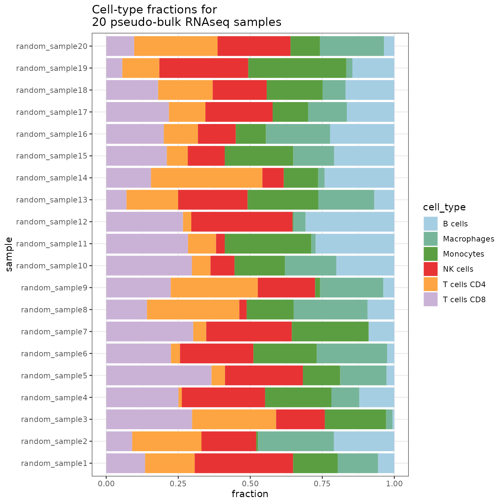

simulator_documentation.RmdTo install the package, run this: (Since it is a private repository, you currently need an authentication token for this repository.)
install.packages("devtools")
devtools::install_github("omnideconv/simulator") #add auth_token=XXX to download from private repositoryCell-type deconvolution is an important analysis-step while processing bulk RNA-seq experiments and many tools exist to tackle this issue. Though the user lacks a good comparison between those tools and when one might be more beneficial than others.
The goal of is to create benchmark datasets, where pseudo bulk samples with predefined cell-type fractions can be simulated using expression data from single-cell RNAseq experiments.
This chapter covers all you need to know to quickly simulate some pseudo-bulk samples!
This package can simulate samples from local or public data. We will start with the public data integration, since it requires mostly no manual download of datasets. As a public database, sfaira (Fischer et al. 2020) is used, which is a dataset and model repository for single-cell RNA-sequencing data. It gives access to about 233 datasets from human and mouse with more than 3 million cells in total. You can browse them interactively here: https://theislab.github.io/sfaira-portal/Datasets. Note that only annotated datasets will be downloaded!
In order to use this database, we first need to install it. We recommend to use conda to create a new environment and install sfaira into this directory. This ensures that no other packages interfere with the installation.
Note: currently the simulator seems to work only with the develop version of sfaira.
A recommended step by step installation would look like this:
conda create --name sfaira python=3.9 pip
conda activate sfaira
/path/to/conda/envs/sfaira/bin/pip install git+https://github.com/theislab/sfaira.git@dev #this ensures that the correct pip is usedWatch out that you are using pip inside of the new environment, not the global pip!
You do not need to activate the new conda environment each time in order to use it in the R package.
To setup sfaira inside of the R package use this command:
setup_list <- simulator::setup_sfaira(python_path = "/nfs/home/students/adietrich/.conda/envs/sfaira/bin/python3",
env_name = "sfaira",
basedir = "/nfs/home/students/adietrich/ma/data/sfaira")The python_path parameter is used to set the path to the python executable inside of the newly created conda environment. Similarly, the env_name parameter is the name of this newly created conda environment. These two parameters need to be set correctly, so that sfaira can be used later on. You can find out the python-path in a conda environment named sfaira like this:
activate sfaira
which python3The third parameter describes the name of a directory in which the raw files, meta data and cached data from downloading datasets from sfaira are stored into.
You need to save the output of the command above in a variable for later use.
If you do not wish to use sfaira, just skip this step entirely.
The simulator package works with two internally defined data-structures: datasets and databases.
We will now create a dataset of samples from human pancreas using the organisms and tissues parameter. You can provide a single word (like we do here) or for example a list of tissues you want to download: c("pancreas","lung"). An additional parameter is the assays parameter, where you subset the database further to only download datasets from certain sequencing assays (for examples Smart-seq2).
The name parameter is used later on to give each sample a unique name.
ds_human_pancreas <- simulator::dataset_sfaira_multiple(sfaira_setup = setup_list,
organisms = "human",
tissues = "pancreas",
name="human_pancreas")
#> [1] "Removing datasets without cell-type annotation..."
#> [1] "Downloading datasets..."
#> [1] "Streamlining features & meta-data..."
#> [1] "Using rownames for cell-IDs."
#> [1] "Filtering genes..."
#> [1] "Created dataset."Currently there are two datasets in sfaira from human pancreas, which have cell-type annotation. The package will download them for you automatically and merge them together into a single expression matrix and a streamlined annotation table, which we can use for our simulation.
It can happen, that some datasets from sfaira are not (yet) ready for the automatic download, an error message will then appear in R, telling you which file to download and where to put it.
If you wish to see all datasets which are included in sfaira you can use the following command:
all_datasets <- simulator::sfaira_overview(setup_list = setup_list)
head(all_datasets)
#> id
#> 1: human_liver_2019_10x3v2_popescu_001_10.1038/s41586-019-1652-y
#> 2: human_lungparenchyma_2019_10x3v2_madissoon_001_10.1186/s13059-019-1906-x
#> 3: human_esophagus_2019_10x3v2_madissoon_002_10.1186/s13059-019-1906-x
#> 4: human_spleen_2019_10x3v2_madissoon_003_10.1186/s13059-019-1906-x
#> 5: human_lung_2019_dropseq_braga_001_10.1038/s41591-019-0468-5
#> 6: human_lungparenchyma_2019_10x3transcriptionprofiling_braga_001_10.1038/s41591-019-0468-5
#> author doi annotated normalization
#> 1: Popescu 10.1038/s41586-019-1652-y TRUE raw
#> 2: Madissoon 10.1186/s13059-019-1906-x TRUE raw
#> 3: Madissoon 10.1186/s13059-019-1906-x TRUE raw
#> 4: Madissoon 10.1186/s13059-019-1906-x TRUE raw
#> 5: Braga 10.1038/s41591-019-0468-5 TRUE raw
#> 6: Braga 10.1038/s41591-019-0468-5 TRUE scaled
#> assay organ organism
#> 1: 10x 3' v2 liver human
#> 2: 10x 3' v2 lung parenchyma human
#> 3: 10x 3' v2 esophagus human
#> 4: 10x 3' v2 spleen human
#> 5: Drop-seq lung human
#> 6: 10x 3' transcription profiling lung parenchyma humanWe are now ready to simulate the first pseudo bulk samples with the created dataset:
simulation <- simulator::simulate_bulk(data = ds_human_pancreas,
scenario = "random",
scaling_factor = "NONE",
ncells=1000,
nsamples = 50,
ncores = 4)
#> Finished simulation.ncells sets the number of cells in each sample, while nsamples sets the total amount of simulated samples.
You can also control the number of cells per sample by using the total_read_counts parameter, which sets the total number of counts per sample. This can be used to simulate different sequencing depths. If you wish to use this parameter, it is important to know what type of expression data you have (raw or normalized). If you for example use TPMs as expression values and set the total read counts to 1e7, this will get you really huge samples with many cells, since TPM values are generally smaller than the raw count values.
Currently there are 6 scenarios implemented in the package:
random: for each cell in a sample, the cell-type is chosen randomly. This scenario is depending on the background distribution of the cell-types in the created dataset. If for example your dataset contains 20% B-cells, 40% T-cells and 40% Macrophages, this scenario will create samples where this distribution is mirrored closely.
uniform: this creates samples, where all existing cell-types in the dataset appear in the same proportions. So using a dataset with 3 cell-types, this will simulate samples, where all cell-type fractions are 1/3.
spike-in: here you need to set two additional parameters for the simulate_bulk() function: spike_in_cell_type sets the cell-type you want to be over-representing and spike_in_amount sets the fraction of this cell-type. You could for example use B-cell and 0.5 to create samples, where 50% are B-cells and the rest is filled randomly with other cell-types.
spill-over: this simulates samples with only a single cell-type present. Like with spike-in you need to set this cell-type with the additional parameter spillover_cell_type.
unique: this creates simulations of only one single cell-type. You have to provide the name of this cell-type with the unique_cell_type parameter.
custom: here you are able to create your own set of cell-type fractions. When using this scenario, you additionally need to provide a dataframe in the custom_scenario_data parameter, where each row represents one sample (therefore the number of rows need to match the nsamples parameter). Each column has to represent one cell-type, which also occurs in the dataset and describes the fraction of this cell-type in a sample. The fractions per sample need to sum up to 1. An example can be seen here:
unique_scenario_dataframe <- data.frame(
"B cells" = c(0.2, 0.1, 0.5, 0.3),
"T cells" = c(0.3, 0.8, 0.2, 0.5),
"NK cells" = c(0.5, 0.1, 0.3, 0.2),
row.names = c("sample1","sample2","sample3","sample4")
)
unique_scenario_dataframe
#> B.cells T.cells NK.cells
#> sample1 0.2 0.3 0.5
#> sample2 0.1 0.8 0.1
#> sample3 0.5 0.2 0.3
#> sample4 0.3 0.5 0.2The simulation object contains three named entries:
pseudo_bulk_raw: a sparse matrix with - in this case - 50 columns and about 60k rows (this is the number of features/genes). This is the simulated expression matrix.
pseudo_bulk: same as above, but CPM normalized samples.
cell_fractions: a dataframe with 50 rows and 15 columns (this is the number of cell-types). It gives the fractions for each cell-type in each sample.
expression_set: a Biobase ExpressionSet
Finally here is a boxplot of the resulting simulation:
fractions <- simulation$cell_fractions
fractions$sample <- rownames(fractions)
frac_long <- gather(fractions, cell_type, fraction, 1:length(fractions)-1)
ggplot(frac_long, aes(x=fraction, y=sample, fill=cell_type))+
geom_col()+
ggtitle("Cell-type fractions for 50 pseudo-bulk RNAseq samples")+
scale_fill_manual(values = colorRampPalette(brewer.pal(8, "Set2"))(length(unique(frac_long$cell_type))))
The simulator also has the option to create datasets with your own scRNAseq experiments. You can create datasets in three different ways:
# change paths accordingly
counts <- Matrix(as.matrix(fread("~/ma/data/Maynard/X_tpm.csv")), sparse = T)
genes <- fread("~/ma/data/Maynard/var.csv")
cells <- fread("~/ma/data/Maynard/obs.csv")
cellnames <- cells$Run
genenames <- genes$symbol
dimnames(counts)<-list(cellnames, genenames)
counts <- t(counts)
annotation <- fread("~/ma/data/Maynard/annotation_obs.csv")[,c("Run","cell_type")]
colnames(annotation) <- c("ID", "cell_type")
dataset_file <- simulator::dataset(annotation = annotation,
count_matrix = counts,
name="Maynard")
#> [1] "Filtering genes..."
#> [1] "Created dataset."
# change paths accordingly
h5ad_file <- "~/ma/data/Travaglini/Travaglini_Krasnow_2020_Lung_SS2.h5ad"
annotation <- fread("~/ma/data/Travaglini/obs_extended.csv")
# renaming the columns
colnames(annotation)[which(colnames(annotation) == "free_annotation")]<-"cell_type"
colnames(annotation)[which(colnames(annotation) == "index")]<-"ID"
dataset_h5ad <- simulator::dataset_h5ad(annotation = annotation,
h5ad_file = h5ad_file,
name = "Travaglini")
#> [1] "Filtering genes..."
#> [1] "Created dataset."
# download Seurat object from tabula muris
# https://figshare.com/ndownloader/files/13088531
load("~/ma/data/tabula_muris/tabula_muris_bladder.Robj")
seurat_obj <- Seurat::UpdateSeuratObject(tiss)
#> Updating from v2.X to v3.X
#> Validating object structure
#> Updating object slots
#> Ensuring keys are in the proper strucutre
#> Ensuring feature names don't have underscores or pipes
#> Object representation is consistent with the most current Seurat version
annotation <- seurat_obj@meta.data
# renaming the columns
colnames(annotation)[which(colnames(annotation) == "free_annotation")]<-"cell_type"
annotation$ID <- rownames(annotation)
dataset_seurat <- simulator::dataset_seurat(annotation = annotation,
seurat_obj = seurat_obj,
name="TabulaMuris_Bladder")
#> [1] "Filtering genes..."
#> [1] "Created dataset."Important: the annotation dataframe you are feeding into the dataset, needs these two columns: ID for the cell ID, which has to be in common with the cell IDs in the expression matrix and cell_type, which gives the cell-type for a cell.
Sometimes, you are only interested in specific cell-types, but the dataset you are using has way too many cell-types:
unique(dataset_file@annotation$cell_type)
#> [1] "Monocyte conventional" "Macrophage"
#> [3] "Endothelial cell" "Mast cell"
#> [5] "B cell" "T cell CD8"
#> [7] "T cell CD4" "Alevolar cell type 2"
#> [9] "Basal" "Smooth muscle cell"
#> [11] "NK cell" "other C17"
#> [13] "Monocyte non-conventional" "cDC2"
#> [15] "Epithelial cell other C5" "Fibroblast adventitial"
#> [17] "Club" "Epithelial cell other C4"
#> [19] "DC mature" "Epithelial cell other C1"
#> [21] "Plasma cell" "Epithelial cell other C3"
#> [23] "Pericyte" "Alevolar cell type 1"
#> [25] "T cell regulatory" "pDC"
#> [27] "Epithelial cell other C2" "Ciliated"
#> [29] "other C21" "other C19"
#> [31] "Fibroblast alevolar" "cDC1"
#> [33] "Mesothelial" "Endothelial cell lymphatic"
#> [35] "DC Lagerhans" "Epithelial cell dividing"
#> [37] "T cell dividing" "other C29"
#> [39] "Ionocyte" "other C32"
#> [41] "other C33" "Goblet"
length(unique(dataset_file@annotation$cell_type))
#> [1] 42You can handle this issue during simulation using the whitelist parameter:
simulation <- simulator::simulate_bulk(data = dataset_file,
scenario = "spike_in",
scaling_factor = "NONE",
spike_in_cell_type = "NK cell",
spike_in_amount = 0.5,
ncells=1000,
nsamples = 50,
ncores = 12,
whitelist = c("NK cell","B cell","T cell CD8", "T cell CD4", "Macrophage", "Monocyte conventional", "Monocyte non-conventional"))
#> Finished simulation.
fractions <- simulation$cell_fractions
fractions$sample <- rownames(fractions)
frac_long <- gather(fractions, cell_type, fraction, 1:length(fractions)-1)
ggplot(frac_long, aes(x=fraction, y=sample, fill=cell_type))+
geom_col()+
ggtitle("Cell-type fractions for 50 pseudo-bulk RNAseq samples")+
scale_fill_manual(values = colorRampPalette(brewer.pal(8, "Set2"))(length(unique(frac_long$cell_type))))In the same way, you can also provide a blacklist parameter, where you name the cell-types you don’t want to be included in your simulation.
It is possible to filter your dataset by variance and remove genes with only 0 expression values. Also low expressed cell-types can be removed.
ds_filtered <- dataset(annotation=annotation,
count_matrix = count_matrix,
name="filter_test",
type_abundance_cutoff=10,
filter_genes = T,
variance_cutoff = .1)Here we removed all cells which belong to a cell-type that has only 10 or less cells annotated with the type_abundance_cutoff parameter.filter_genes will remove all genes which have an expression value of 0 over all cells.
With variance_cutoff you can set a cutoff to remove all genes with a variance over all cells below this value.
The pseudo-bulk sample will be generated by aggregating the expression values from all sampled cells and is then normalized. The default aggregation method is sum, but you also have the options mean and median. You can select them like this:
sim_aggregation <- simulate_bulk(data=ds,
scenario="random",
scaling_factor="NONE",
sample_aggreation = "median", # use median as aggregation
nsamples = 100,
ncells=1000,
ncores=4)